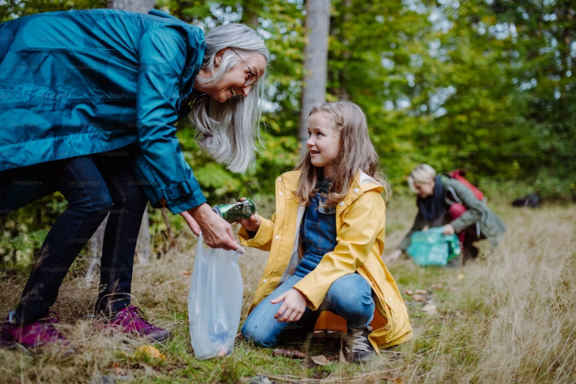

¡Recicla en
casa fácilmente!
Descubre cómo pequeños cambios pueden hacer una gran diferencia.

Consejos prácticos para reciclar en casa:
1. Separa los materiales reciclables:
Usa diferentes contenedores para plástico, papel, vidrio, y metal.
2. Limpia antes de reciclar:
Asegúrate de enjuagar envases de comida o bebidas antes de depositarlos.
3. Reutiliza siempre que sea posible:
Usa frascos de vidrio como recipientes o convierte cajas de cartón en organizadores.
4. Identifica centros de reciclaje cercanos:
Infórmate sobre los puntos de recolección más accesibles en tu comunidad.
5. Composta tus residuos orgánicos:
Transforma cáscaras de frutas y restos de vegetales en abono para plantas.